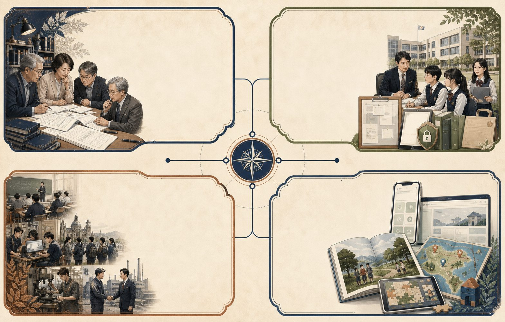

시험 콘텐츠, 특성화고 공익 서비스, 앱·웹 개발은 교육현장 30년의 경험에서 출발합니다.
이미지 지도를 좌우로 움직여 전체 사업을 살펴보세요.

임용·수능·공무원 시험을 전문가 공동집필과 전수 검수로 설계합니다.
채용정보·상담자료실·권한 기반 전자책을 공익 서비스로 운영합니다.
학생·교사·학교·기업과 함께한 경험이 모든 사업의 판단 기준입니다.
교육 아이디어를 사용 가능한 앱, 콘텐츠, 기관 웹서비스로 구현합니다.
집필·검수·앱·웹·교육 서비스